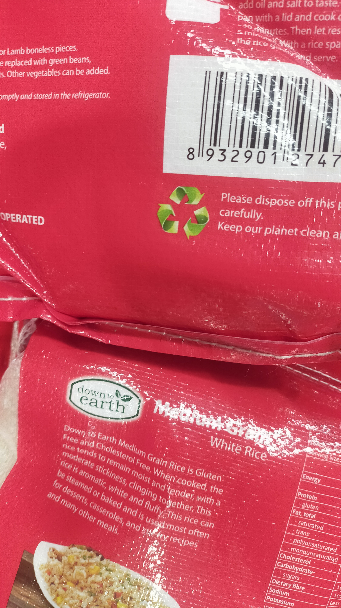

Have you ever thought this isn't good for the enivroment?
A large amount of food of our supermarket shelves are wrapped with plastic and metal that goes right in the trash after for the sake of keeping our food fresh.
However!
A very visible downside: The amount of unsustainable waste it is producing, where it is going, and the resources it consumes. Which is why I want to investigate which packages are already more sustainable than the competition.


trol
nerds